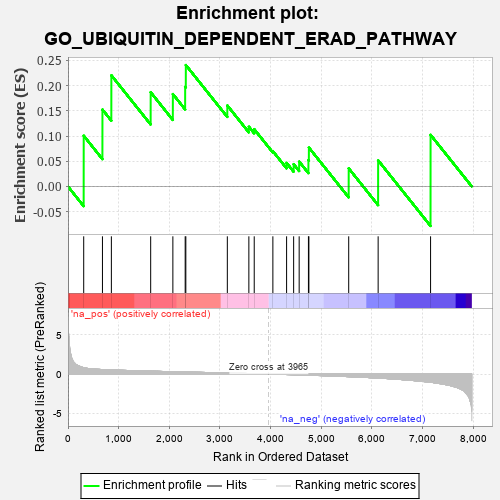
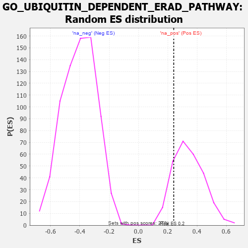

| | | Dataset | 7d |
| Phenotype | NoPhenotypeAvailable |
| Upregulated in class | na_pos |
| GeneSet | GO_UBIQUITIN_DEPENDENT_ERAD_PATHWAY |
| Enrichment Score (ES) | 0.24073821 |
| Normalized Enrichment Score (NES) | 0.7002996 |
| Nominal p-value | 0.84444445 |
| FDR q-value | 0.95919526 |
| FWER p-Value | 1.0 |
Table: GSEA Results Summary

Fig 1: Enrichment plot: GO_UBIQUITIN_DEPENDENT_ERAD_PATHWAY
Profile of the Running ES Score & Positions of GeneSet Members on the Rank Ordered List
| PROBE | GENE SYMBOL | GENE_TITLE | RANK IN GENE LIST | RANK METRIC SCORE | RUNNING ES | CORE ENRICHMENT | | 1 | JKAMP | | | 310 | 0.804 | 0.1006 | Yes |
| 2 | FAF2 | | | 680 | 0.566 | 0.1525 | Yes |
| 3 | AMFR | | | 856 | 0.518 | 0.2204 | Yes |
| 4 | DERL2 | | | 1632 | 0.368 | 0.1868 | Yes |
| 5 | TMUB2 | | | 2070 | 0.295 | 0.1832 | Yes |
| 6 | UBE4B | | | 2313 | 0.258 | 0.1976 | Yes |
| 7 | TMUB1 | | | 2326 | 0.257 | 0.2407 | Yes |
| 8 | EDEM2 | | | 3145 | 0.131 | 0.1606 | No |
| 9 | DERL1 | | | 3570 | 0.065 | 0.1185 | No |
| 10 | STT3B | | | 3676 | 0.047 | 0.1135 | No |
| 11 | SGTB | | | 4044 | -0.015 | 0.0700 | No |
| 12 | AUP1 | | | 4315 | -0.062 | 0.0467 | No |
| 13 | SYVN1 | | | 4454 | -0.085 | 0.0442 | No |
| 14 | BAG6 | | | 4563 | -0.108 | 0.0494 | No |
| 15 | EDEM3 | | | 4746 | -0.148 | 0.0522 | No |
| 16 | UBE4A | | | 4755 | -0.149 | 0.0771 | No |
| 17 | EDEM1 | | | 5541 | -0.331 | 0.0359 | No |
| 18 | UBXN4 | | | 6122 | -0.511 | 0.0517 | No |
| 19 | UFD1 | | | 7157 | -1.040 | 0.1024 | No |
Table: GSEA details [plain text format]

Fig 2: GO_UBIQUITIN_DEPENDENT_ERAD_PATHWAY: Random ES distribution
Gene set null distribution of ES for GO_UBIQUITIN_DEPENDENT_ERAD_PATHWAY